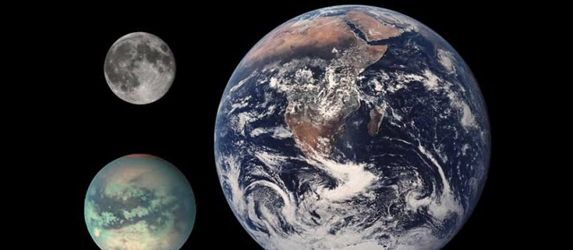
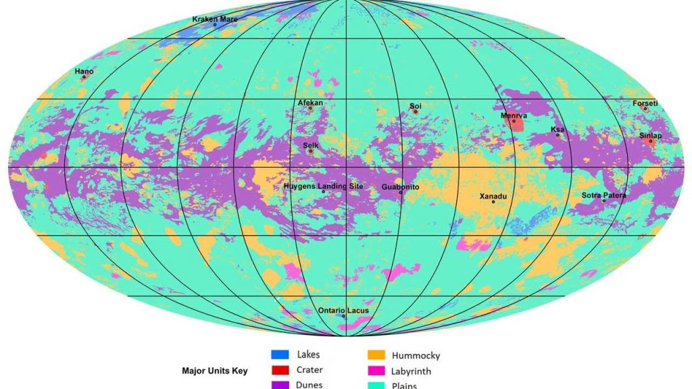

Una nueva investigación de la NASA, publicada en Nature Astronomy, atravesó la neblina turbia de la atmósfera de Titán, y ha presentado el primer mapa global de la luna.
La diferencia significativa es que en lugar de lagos de agua como la Tierra, Titán tiene hidrocarburos de metano y etano en su superficie.
Seis formas geológicas principales se describieron en el nuevo mapa: lagos, cráteres de impacto, dunas de arena, hummocky (un término geológico elegante para regiones montañosas con algunas montañas), laberintos (regiones desgarradas tectónicamente) y llanuras.
Asimismo, la NASA expresa que la superficie de Titán es una de las más geológicamente diversas del sistema solar. La agencia espacial utilizó datos recopilados de la misión Cassini que funcionó entre 2004 y 2017.
La nave espacial completó más de 120 sobrevuelos de Titán, que es aproximadamente del tamaño de Mercurio..
